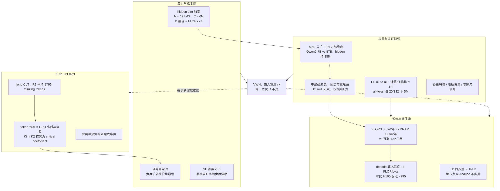
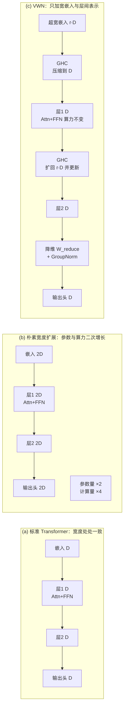
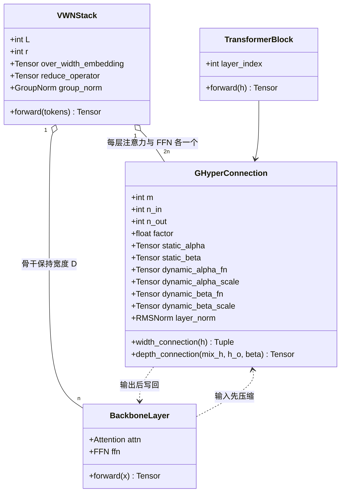
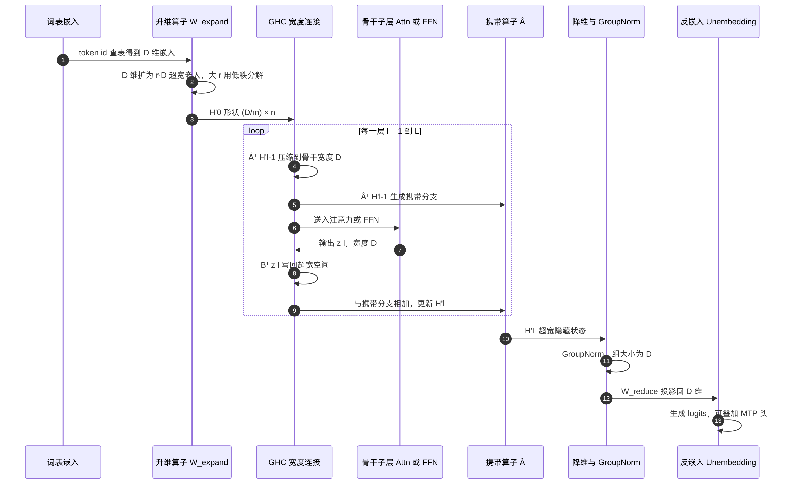
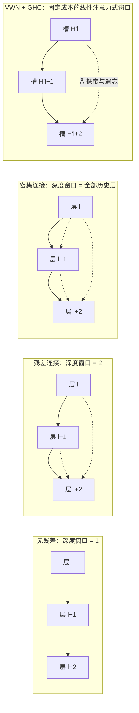
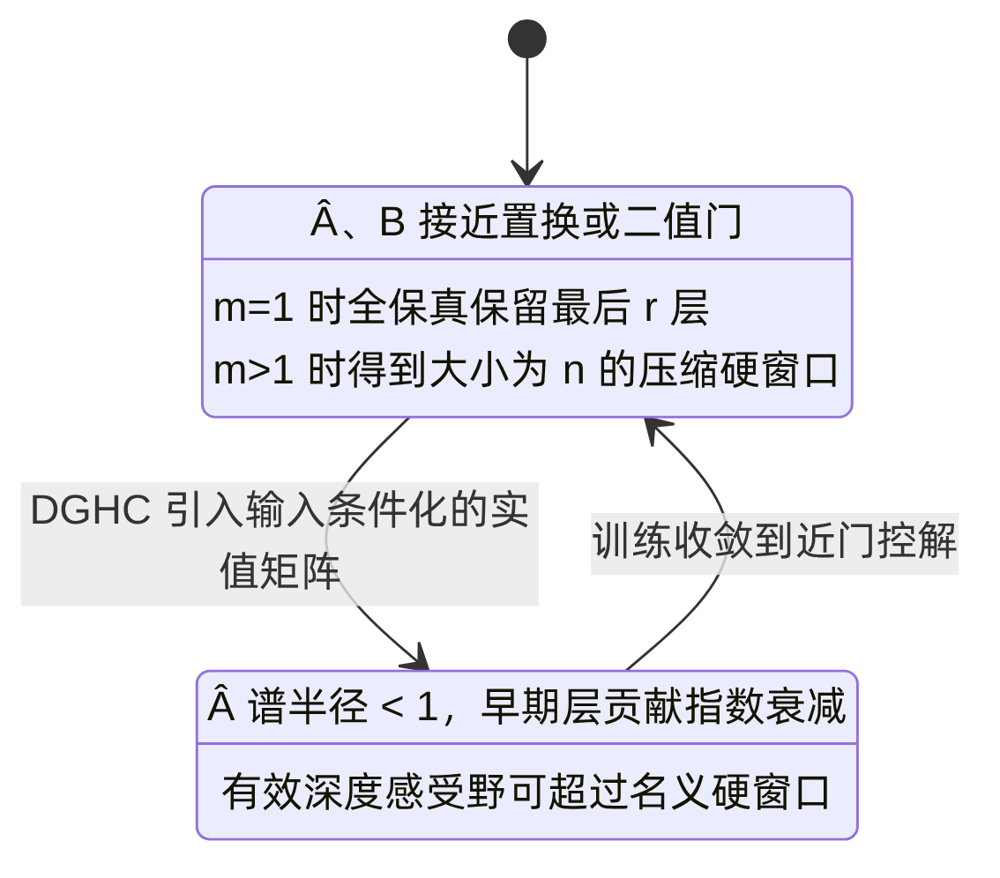
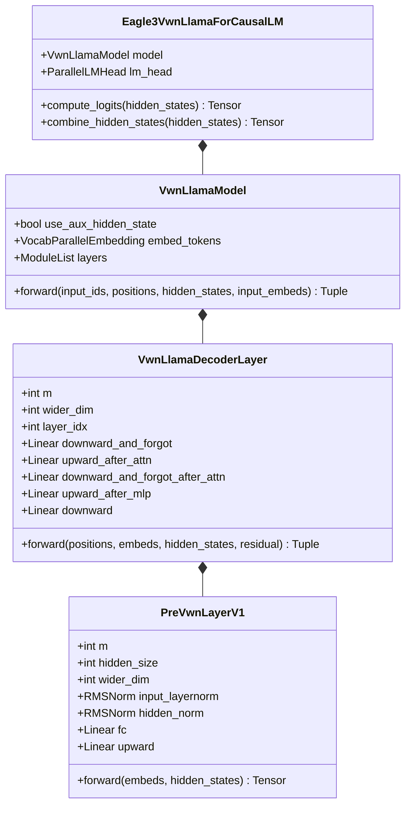
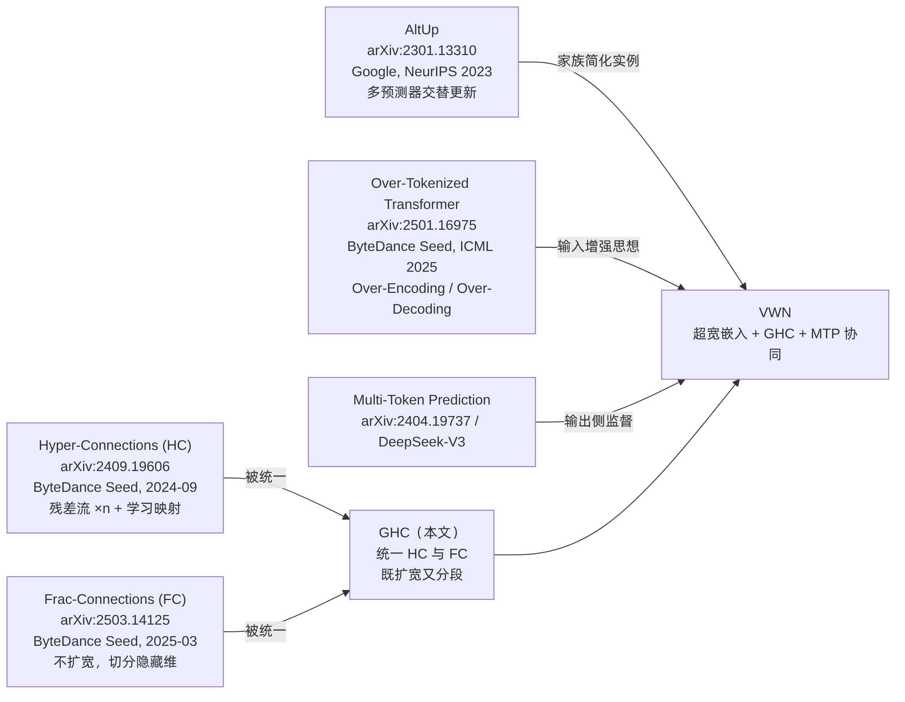
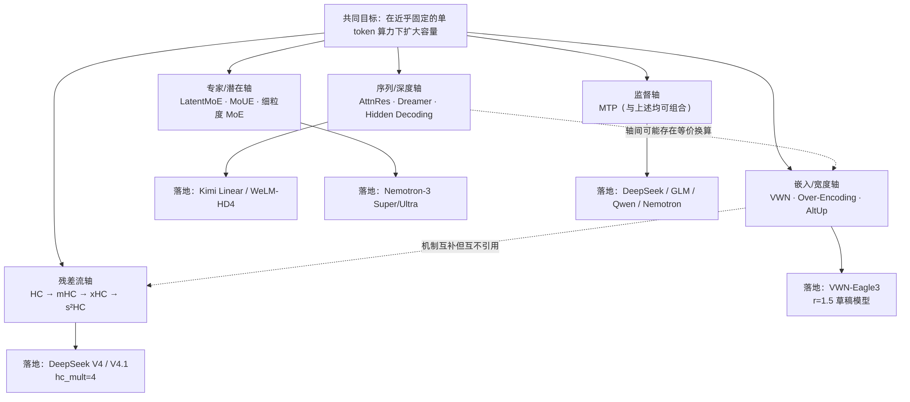
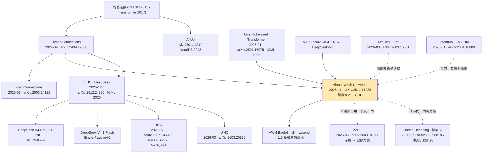

Seed 团队 VWN（Virtual Width Networks）技术洞察 · 图表预览
对应文档：Seed-VWN-技术洞察.md ｜ 渲染源：assets/mmd/*.mmd
图 1 · 问题图谱（第 1 章）

d1-problem-map
图 2 · 三种宽度范式对比（§2.2）

d2-width-paradigms
图 3 · GHC 类图（§2.4.3，UML classDiagram）

d3-ghc-class
图 4 · VWN 前向传播时序图（§2.4.4，UML sequenceDiagram）

d4-forward-sequence
图 5 · 深度窗口对比（§2.8）

d5-depth-windows
图 6 · 硬/软路由状态机（§2.8，UML stateDiagram）

d6-routing-state
图 7 · VWN-Eagle3 落地类图（§2.10.1）

d7-eagle3-class
图 8 · 论文内技术谱系（§2.11）

d8-lineage
图 9 · 2026 年四大扩容轴（§3.3）

d9-axes-map
图 10 · 变种技术谱系（§3.6）

d10-variants-lineage